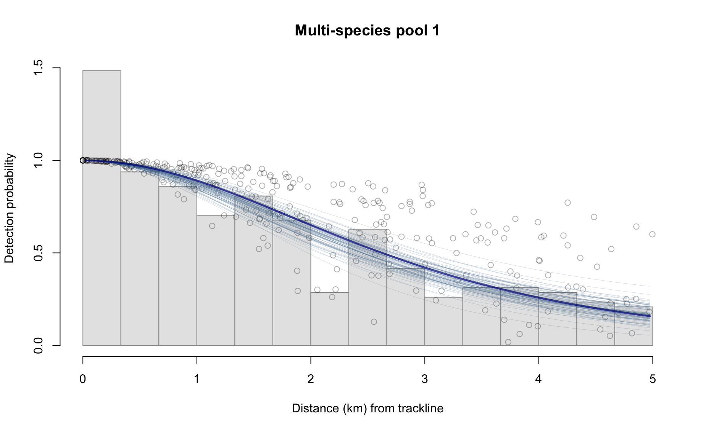
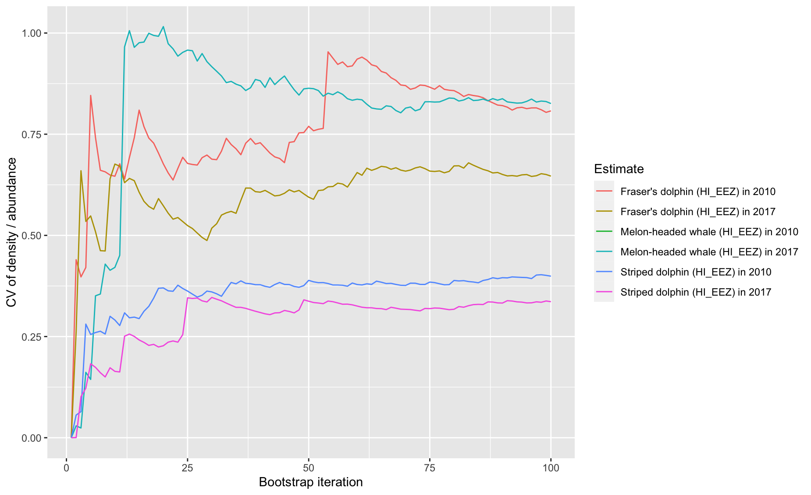

12 Diagnostic plots
To demonstrate how LTA results can explored quickly and reviewed for QA/QC using diagnostic plots, we will use a built-in LTabundR dataset, which has density/abundance estimates for the Hawaiian EEZ in 2010 and 2017 for striped dolphins, Fraser’s dolphins, and melon-headed whales, ran with only 100 iterations:
We created these LTA results using the following built-in processed dataset:
The function lta_diagnostics() can be used to review the object returned by the LTabundR function lta(), which is the primary function in this package for line-transect analysis. The typical way to use this function is simply:
When you run this, the function will step through many diagnostic outputs (there are currently 8), some of which are tables and some of which are plots. Between each output, the function will wait for the user to press <Enter>. To turn that waiting feature off, you can add the input wait = FALSE.
To see which outputs are currently available from this function, use the following code:
lta_diagnostics(lta_result,
options = c(),
describe_options = TRUE)
List of options for outputs to provide: ===============
(use numbers in the input `options`)
1 - Point estimate (encounter rate, density, abundance, g(0), etc.)
2 - Summary of bootstrap iterations, including CV of density/abundance
3 - Plot of detection function
4 - Histogram of bootstrapped detection counts
5 - Histogram of bootstrapped g(0) values
6 - Histogram of bootstrapped abundance estimates
7 - Scatterplot of abundance ~ g(0) relationship in boostraps
8 - Time series of point estimate CV as bootstraps accumulate
======================================================To call specific outputs and not others, use the options input. We demonstrate this be stepping through each output below.
Option 1: The point estimate
lta_diagnostics(lta_result, options = 1)
title species Region Area year segments km Area_covered
1 Striped dolphin 013 (HI_EEZ) 2474596 2010 134 18102 64377
2 Striped dolphin 013 (HI_EEZ) 2474596 2017 137 17273 61571
3 Fraser's dolphin 026 (HI_EEZ) 2474596 2010 134 18102 63021
4 Fraser's dolphin 026 (HI_EEZ) 2474596 2017 137 17273 50516
5 Melon-headed whale 031 (HI_EEZ) 2474596 2010 134 18102 NA
6 Melon-headed whale 031 (HI_EEZ) 2474596 2017 137 17273 57626
ESW_mean n g0_est ER_clusters D_clusters N_clusters size_mean size_sd ER
1 3.56 19 0.33 0.0010 0.0005 1129.4 51.4 47.2 0.0539
2 3.56 17 0.32 0.0010 0.0004 1104.8 35.4 18.1 0.0348
3 3.48 3 0.33 0.0002 0.0001 179.4 236.2 129.0 0.0391
4 2.92 2 0.32 0.0001 0.0001 154.0 355.6 91.4 0.0412
5 NA 0 0.33 0.0000 0.0000 0.0 NA NA 0.0000
6 3.34 3 0.32 0.0002 0.0001 202.0 189.2 68.4 0.0329
D N g0_small g0_large g0_cv_small g0_cv_large
1 0.0223 55218 0.33 0.33 0.20 0.21
2 0.0148 36678 0.32 0.32 0.21 0.21
3 0.0175 43253 0.33 0.33 0.20 0.21
4 0.0218 53999 0.32 0.32 0.21 0.21
5 0.0000 0 0.33 0.33 0.20 0.21
6 0.0152 37615 0.32 0.32 0.21 0.21Option 2: Summary of bootstrap iterations
lta_diagnostics(lta_result, options = 2)
title Region year species iterations ESW_mean g0_mean
1 Fraser's dolphin (HI_EEZ) 2010 026 100 3.720370 0.3265753
2 Fraser's dolphin (HI_EEZ) 2017 026 100 3.277146 0.3124772
3 Melon-headed whale (HI_EEZ) 2010 031 100 NaN 0.3209042
4 Melon-headed whale (HI_EEZ) 2017 031 100 3.151928 0.3201805
5 Striped dolphin (HI_EEZ) 2010 013 100 3.681439 0.3263969
6 Striped dolphin (HI_EEZ) 2017 013 100 3.643254 0.3225009
g0_cv km ER D size Nmean Nmedian Nsd
1 0.2045909 18175.25 0.04191221 0.01934134 239.58838 47862.01 40236.80 39619.30
2 0.1837095 17420.51 0.04363659 0.02255462 353.61848 55813.57 51795.71 36926.13
3 0.1874003 18175.25 0.00000000 0.00000000 NaN 0.00 0.00 0.00
4 0.2058941 17420.51 0.03278565 0.01879579 197.22189 46511.97 33793.75 39478.17
5 0.2041014 18175.25 0.05339105 0.02281395 52.21862 56455.29 51375.72 23096.04
6 0.1897529 17420.51 0.03389859 0.01490678 34.71461 36888.24 34647.24 12654.75
CV L95 U95
1 0.8277818 11965.50 191448.02
2 0.6615977 18604.52 167440.72
3 NaN NaN NaN
4 0.8487744 11627.99 186047.88
5 0.4091033 28227.65 112910.59
6 0.3430566 18444.12 73776.49Option 3: Plot of detection function

Option 4: Histogram of bootstrapped detection counts

Option 5: Histogram of bootstrapped g(0) values

Option 6: Histogram of bootstrapped abundance estimates

Option 7: Relationship between bootstrap g(0) and abudance

Option 8: Running calculation of CV during bootstrap process
